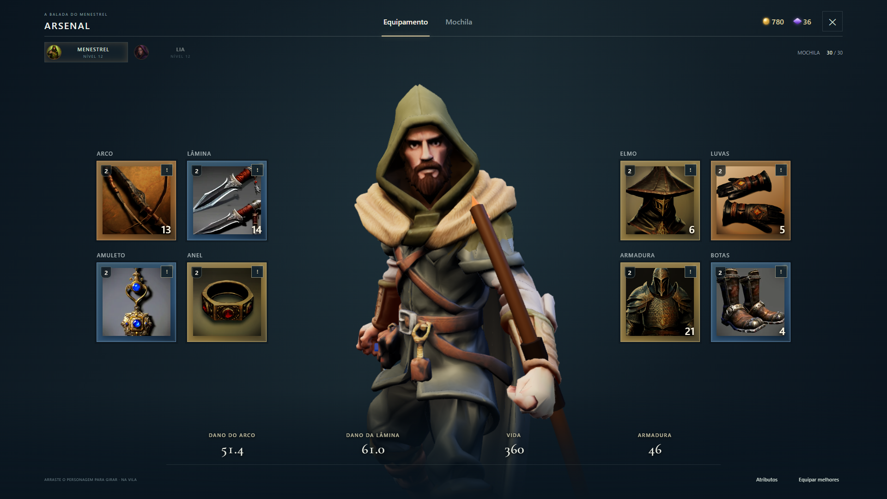
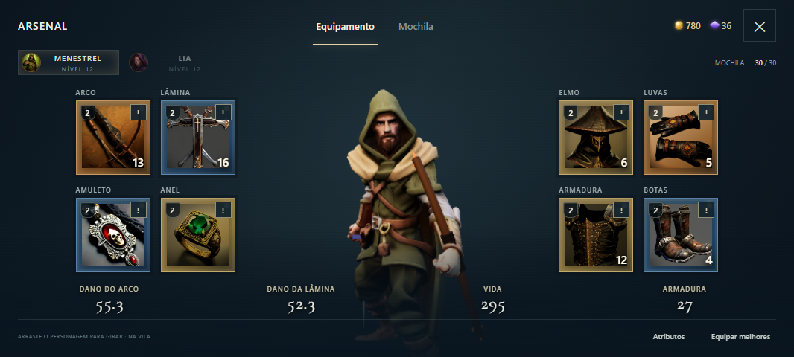
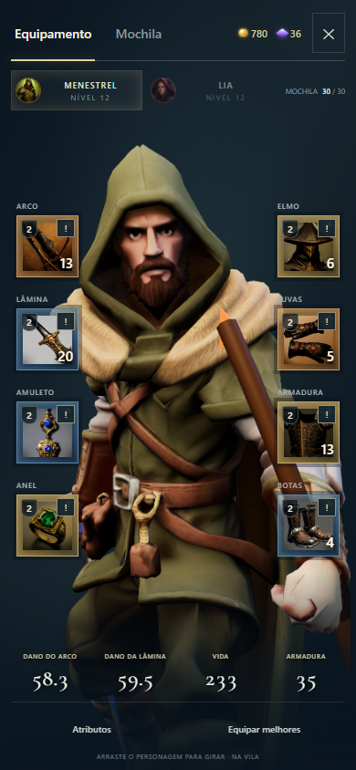

Continuidade até o rodapé
Rosto e tronco mantêm o enquadramento próximo. O personagem permanece sólido e em idle, com equipamentos e atributos à frente dele.

O corpo agora continua por trás dos atributos e do rodapé até a borda inferior. Um sombreado suave na base integra o personagem ao fundo, eliminando o corte reto na cintura.
Rosto e tronco mantêm o enquadramento próximo. O personagem permanece sólido e em idle, com equipamentos e atributos à frente dele.

O acabamento acompanha a área disponível no celular. Cartões, textos e botões permanecem à frente do personagem para você selecionar e trocar equipamentos.

